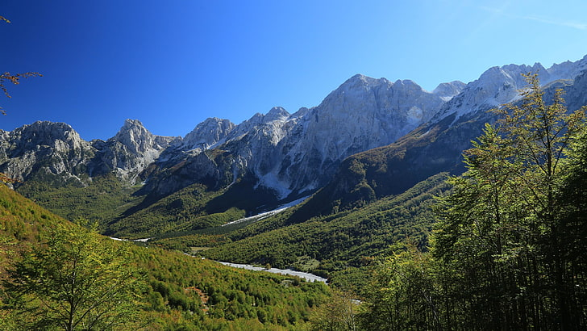

Drin
The Drin originates near the town of Kukës, in the northeast of Albania, at the confluence of the rivers Black Drin and White Drin. It then flows west for about 335 km (208 mi) passing through the Albanian Alps and Fierzë then upon reaching the Dukagjini highlands, flowing then to the south through Apripë e Gurit, Toplanë, Dushman, Koman, Vjerdhë Mazrrek, Rragam, and Pale Lalej. At Vau i Dejës, it enters the low Shkodër Field and splits into two arms. One empties into the Gulf of Drin into the Adriatic Sea southwest of Lezhë, forming the Mouth of Drin, Albanian: Gryk' e Drinit). The other empties into the Bojana River near the Rozafa Castle.
Vjosë
The river arises in the Pindus mountains of Epirus, Greece, near the village of Vovousa.[11][12] An artificial lake has been constructed at an elevation of 1,350 metres (4,430 ft),[13] where a hydroelectric dam has been in place since 1987. It flows through the canyons of Vikos–Aoös National Park, and then through the town of Konitsa, where it is joined by the Voidomatis. It enters Albania near Çarshovë, where it is joined by the Sarantaporos, and then continues northwest through Përmet, Këlcyrë, and Tepelenë (where it is joined by the Drino), Memaliaj, Selenicë and Novoselë. It then flows into the Adriatic Sea northwest of Vlorë. The river's mouth is located within the boundaries of the Vjosa-Narta Protected Landscape. In December 2020, the Albanian portion of the Vjosa was designated a "Managed Nature Reserve" by the government.
Devoll
Devoll (Albanian: Devoll; definite Albanian form: Devolli) is a river in southern Albania. It is one of the source rivers of Seman. It is 196 km (122 mi) long and its drainage basin is 3,130 km2 (1,210 sq mi). Its average discharge is 49.5 m3/s (1,750 cu ft/s).[2] Its source is in the southwestern corner of the Devoll municipality, close to the Greek border. It flows initially northeast, through Miras, then north through Bilisht, and northwest through Progër, Pojan (in the northern Korçë Plain which was marshy until after the World War II), Maliq, Moglicë, Kodovjat, Gramsh, where it is stowed in a big lake and Gostimë, where it turns south. It joins the Osum near Kuçovë, to form the Seman. The Seman opens into a small delta south of the Karavasta lagoon in the Adriatic sea.
Mat
Mat originates from the confluence of several streams within the karstic mountains in Martanesh, where it forms deep gorges and canyons.[7] Rising in Martanesh, the Mat heads westwards to the municipality of Mat and northwest through the towns of Klos and Burrel. About 10 km (6 mi) downstream from Burrel, it flows into a large reservoir (Liqeni i Ulzës – "Lake Ulëz"). After passing through a hydroelectric dam, it flows through another, smaller reservoir (Liqeni i Shkopetit – "Lake Shkopet") and forms a narrow gorge through the mountain range that separates Mat District from the coastal plains. It enters the plains between Milot and Zejmen.
Valbonë
The Valbona (Albanian: Valbonë) is a river in northern Albania. It is still relatively untouched. Its source is in the Accursed Mountains, near the border with Montenegro. The Valbonë flows generally east through the municipality Margegaj (mountain villages Valbonë, Dragobi and Shoshan), then turns south along Bajram Curri, and continues southwest until its outflow into the river Drin, near Fierzë. It is one of the cleanest rivers in the country. The river begins in and flows through the Valbonë valley.
Bunë

The river used to be longer, but due to a rise in the level of Lake Shkodër, the uppermost part of the river is now under the lake's surface. The river initially flows east, but after only few kilometers reaches the city of Shkodër and turns to the south. On the southern outskirts of the city, the river receives its most important tributary, the Great Drin, the greater part of which became its tributary after changing course during a flood in 1858 and now brings more water (352 m³/s) than the Buna itself (320 m³/s). After flowing around the Peak of Tarabosh, it passes through the villages of Zues, Bërdicë, Darragjat, Oblikë, Obot, Shirq, Dajç and Goricë.